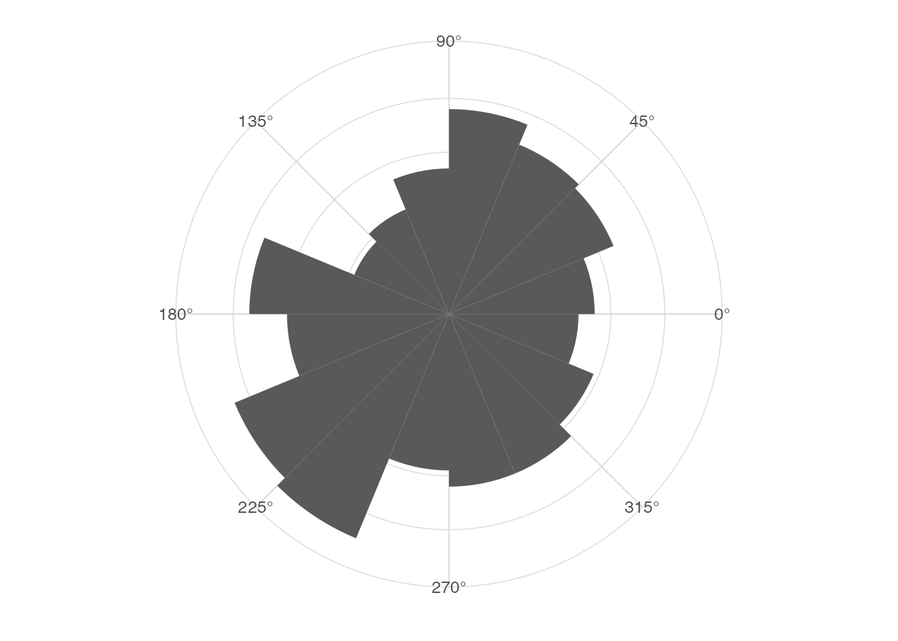
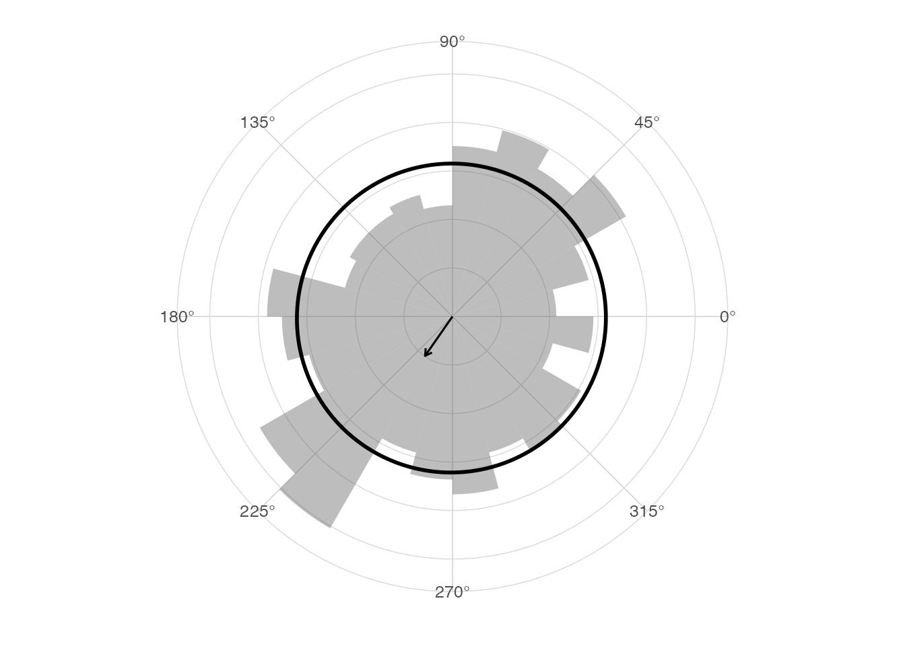
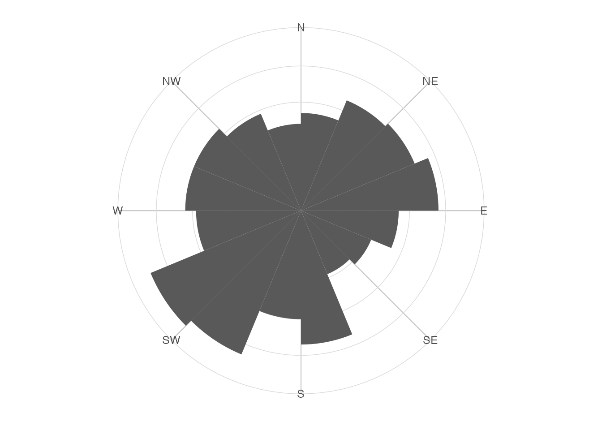

Why circular data are different
Circular observations live on a periodic scale. In radians,
0 and 2 * pi represent the same direction. A
linear histogram or arithmetic mean can be misleading when observations
concentrate near the boundary.
Directional versus axial data
Directional data have an arrow: north and south are different
directions. Axial data have an orientation but no arrow: an angle and
the angle plus pi are equivalent. ggcircular
exposes an axial = TRUE argument in the core statistics and
geoms. Internally, the usual calculation doubles the angles, computes
directional summaries, then divides the resulting angle by two.
Why a standard histogram is not enough
The first and last bins of a circular histogram are adjacent on the circle. A rose diagram respects this topology when combined with a polar coordinate system.
The ggplot2 logic
ggcircular layers are ordinary ggplot2
layers. They can be added to plots, faceted, grouped and combined with
familiar scales and themes.
library(ggplot2)
#> Warning: package 'ggplot2' was built under R version 4.5.2
library(ggcircular)First rose diagram
ggplot(wind_directions, aes(x = direction)) +
geom_rose(bins = 16) +
scale_x_circular_degrees() +
coord_circular() +
theme_circular()
Add density and mean
ggplot(wind_directions, aes(x = direction)) +
geom_rose(aes(y = after_stat(density)), bins = 24, alpha = 0.4) +
geom_circular_density(linewidth = 1) +
geom_mean_direction() +
scale_x_circular_degrees() +
coord_circular() +
theme_circular()
Choose units
The package includes x scales for radians, degrees, hours and compass
labels. Compass labels are intended for use with
coord_circular(zero = "north", direction = "clockwise").
ggplot(wind_directions, aes(x = direction)) +
geom_rose(bins = 16) +
scale_x_circular_compass() +
coord_circular(zero = "north", direction = "clockwise") +
theme_compass()